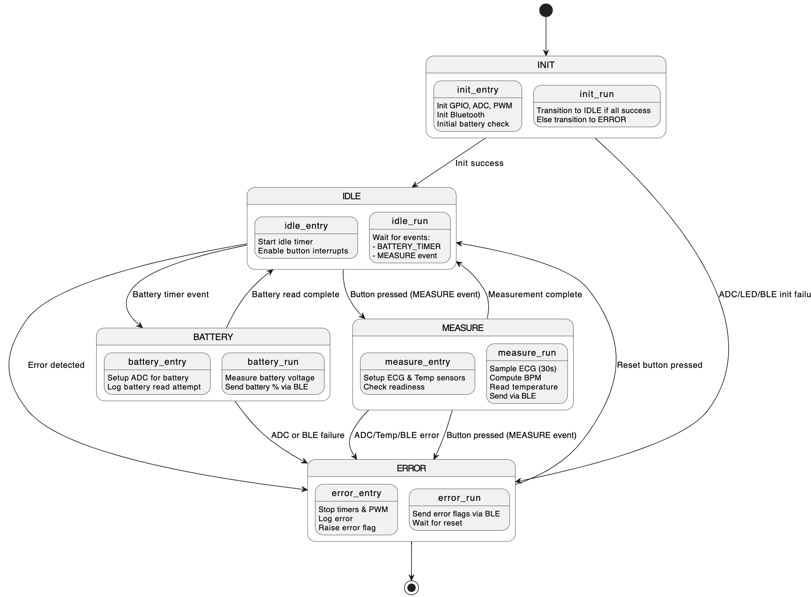
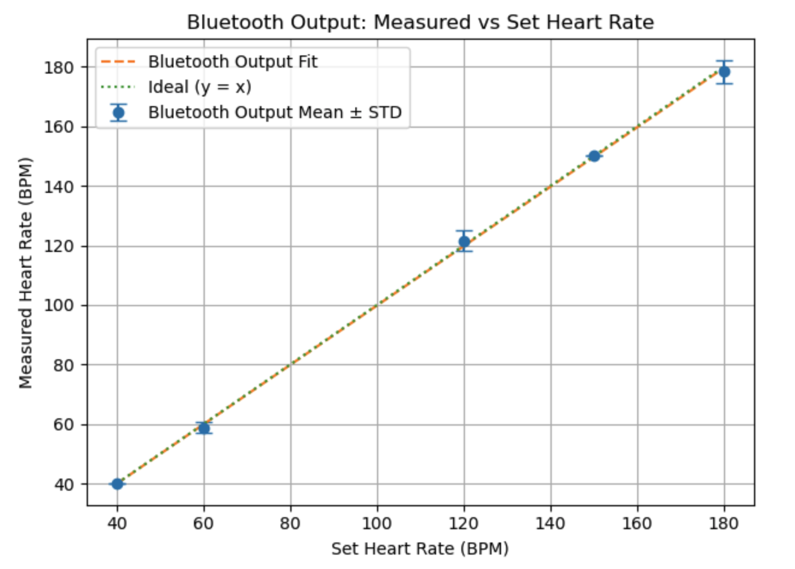
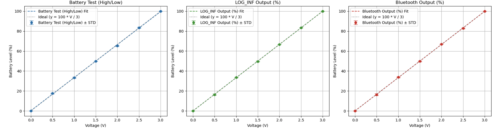

Embedded ECG & Temperature Monitor
May 2025
C • Zephyr RTOS • Bluetooth Low Energy • ADC • I²C • PWM • Embedded Systems
Building a Real-Time Physiological Monitor
This project is an embedded physiological monitoring system that combines ECG acquisition, heart-rate estimation, temperature sensing, battery monitoring, Bluetooth communication, and device-status feedback on a single microcontroller.
Individually, none of these tasks is especially complicated. The interesting problem appears when they all have to run on the same device. ECG acquisition requires consistent timing, battery measurements should happen periodically, Bluetooth events arrive asynchronously, and user inputs can occur at any point in execution.
The project therefore became less about interfacing with individual sensors and more about designing a small real-time system that could coordinate several independent pieces of hardware predictably.
Firmware Architecture
Before implementing the individual sensors, I first needed a clear model for how the device should behave. Allowing every peripheral to independently change system behavior would quickly make the firmware difficult to reason about.
I therefore organized the application as a finite-state machine with five primary states: INIT, IDLE, BATTERY, MEASURE, and ERROR.
A state machine represents a system as a finite set of operating modes with explicit transitions between them. At any point in time, the firmware knows what state it is in and therefore which operations are valid.
For this device, INIT performs hardware setup before transitioning to IDLE. From IDLE, an event can start a physiological measurement or a periodic battery measurement. When either operation completes, the system returns to IDLE. Any serious failure redirects execution into ERROR.

This structure became the backbone of the firmware. The remaining embedded-system mechanisms were introduced as the design required timing, concurrency, hardware input, and communication.
Why Zephyr RTOS?
A simple embedded application can often run inside one infinite loop: read an input, perform some work, update an output, and repeat. That approach becomes harder to maintain once several operations have different timing requirements or can occur asynchronously.
This monitor had exactly that problem. ECG acquisition is timing-sensitive, battery measurements happen periodically, Bluetooth events occur asynchronously, and user inputs may arrive at any time.
I used Zephyr RTOS to provide the scheduling and synchronization infrastructure for the system.
A real-time operating system provides abstractions such as threads, timers, events, and work queues on top of a small kernel. The kernel manages when executable work runs and allows independent pieces of firmware to coordinate without manually implementing an entire scheduler inside the application.
Zephyr did not replace the state machine. The state machine defined what the device should do, while the RTOS provided the mechanisms needed to control when different pieces of work run.
Threaded Control Flow
Once the system became event driven, the main control logic needed a way to wait for new work without continuously polling every peripheral. This is where a thread became useful.
A thread is an independently schedulable sequence of execution. On a single-core microcontroller, several threads do not normally execute instructions at exactly the same instant. Instead, the RTOS kernel switches between runnable threads according to their state and priority.
In this system, the control logic can wait for an event rather than constantly consuming processor time. When there is nothing to do, the execution context blocks. When a measurement request, battery event, or error condition arrives, the kernel can wake the relevant logic.
This avoids a large polling loop in which the processor continuously asks whether every subsystem has something to do. The firmware remains inactive until meaningful work is available.
Events and Interrupts
The next design problem was asynchronous input. A user might request a measurement at any time, a timer might expire, or a peripheral operation might fail.
Continuously checking for these conditions would waste processor time, so the firmware uses an event-driven approach.
A kernel event is a synchronization mechanism that allows one part of the firmware to signal that something has happened. Another execution context can wait until the corresponding event is posted and then react to it.
In this project, events connect asynchronous activity to the state machine. A measurement request can cause the system to move from IDLE to MEASURE, while a detected fault can generate an error event that redirects execution into ERROR.
Hardware input also introduces the concept of an interrupt. An interrupt allows hardware to notify the processor immediately when something happens rather than forcing software to repeatedly poll the hardware.
Interrupt-side work is intentionally kept small. Rather than performing an entire measurement or state transition inside an interrupt handler, the asynchronous input can be converted into an event and the larger operation handled by normal RTOS-managed code.
This keeps interrupt handling fast while preserving the main application logic inside the state machine.
Timers and Periodic Work
Some operations are not triggered directly by the user. Battery state, for example, should be checked periodically while the device continues performing other work.
A naive implementation could simply delay for the required interval. The problem is that a blocking delay prevents that execution context from doing anything useful while it waits.
An RTOS timer allows the kernel to track elapsed time independently. The firmware can schedule an action for the future and continue executing other work while the timer runs.
Battery monitoring uses this pattern. When the timer expires, the firmware is notified that another battery measurement is due. The system can then perform the measurement when appropriate instead of spending the entire interval inside a delay loop.
Timers are also useful for periodic status behavior, such as blinking LEDs, because repeated timing can be handled independently of the main application logic.
ECG Acquisition with the ADC
With the control architecture in place, the primary measurement path could be implemented: ECG acquisition.
An ECG is an analog voltage waveform, while the microcontroller processes digital values. The bridge between these two domains is the analog-to-digital converter, or ADC.
An ADC samples an input voltage and converts it into a numerical value that software can process. For ECG measurement, a single sample is not especially useful. The physiological information exists in the shape and timing of many consecutive samples.
When the state machine enters MEASURE, the firmware acquires ECG samples across an approximately 30-second measurement window. Consistent sampling is important because the heart-rate calculation depends on the timing between repeated cardiac cycles.
The sampled waveform is then processed on the microcontroller to estimate average heart rate.
Embedded Heart-Rate Processing
The ECG waveform contains repeating cardiac cycles. By identifying successive beats and measuring how frequently they occur, the firmware can convert the sampled signal into beats per minute.
Performing this processing directly on the embedded target means the external device does not need to receive and interpret the raw ECG waveform simply to determine heart rate.
Instead, the microcontroller performs the sensing and processing locally and exposes the resulting BPM as a higher-level physiological measurement.
I validated the complete measurement path by comparing known reference heart rates with the values produced by the embedded system and transmitted over Bluetooth.

Temperature Sensing over I²C
Temperature required a different type of sensor interface. Unlike the ECG signal, the MCP9808 temperature sensor performs its own conversion internally and provides a digital measurement.
The microcontroller therefore communicates with the sensor using I²C, a synchronous serial protocol commonly used for embedded sensors and other low-speed peripherals.
I²C uses shared clock and data lines, while device addresses identify the individual peripherals connected to the bus.
During the MEASURE state, the firmware communicates with the MCP9808 over I²C, retrieves the temperature value, and stores it alongside the calculated heart rate.
This gives the system two very different sensing paths:
ECG → ADC → Sampled Waveform → Heart-Rate Processing
and:
MCP9808 → I²C → Digital Temperature Measurement
Bluetooth Low Energy and GATT
Once the monitor could calculate heart rate and measure temperature, those values needed a way to reach an external device.
I used Bluetooth Low Energy, or BLE, because it is designed for low-power wireless communication between embedded peripherals and nearby clients such as smartphones or computers.
BLE organizes application data through the Generic Attribute Profile, or GATT. Rather than transmitting an arbitrary stream of bytes, GATT organizes information into services and characteristics with defined meanings.
The monitor operates as a BLE peripheral. Heart rate is exposed through the standard Heart Rate Service, battery information through the Battery Service, and device metadata through the Device Information Service.
Temperature and firmware error information are exposed using custom characteristics because they do not map as directly onto the standard services used elsewhere in the system.
BLE notifications allow the firmware to push updated values to a connected client after a measurement completes rather than requiring the client to continuously poll the device.
The physiological data path can therefore be viewed as:
Sensor → Peripheral Interface → Embedded Processing → GATT Characteristic → BLE Client
Background Battery Monitoring
Physiological measurement is not the only information the device needs to manage. The firmware also periodically monitors an analog battery signal through another ADC input.
This part of the system demonstrates why the earlier timer and state-machine architecture are useful. Battery measurement does not need to run continuously, and it should not interfere with an active ECG measurement.
Instead, the RTOS timer indicates when another battery measurement is due. When the system is available, the state machine can enter BATTERY, acquire the ADC measurement, process the result, and then return to IDLE.
The resulting battery value is used in three separate output paths: internal firmware reporting, Bluetooth's Battery Service, and a local LED indicator.

PWM and Physical Feedback
Not every output needs to be transmitted over Bluetooth. LEDs provide immediate local feedback without requiring a connected client.
Battery level creates an interesting output problem because it is a continuous value rather than a simple binary condition. To represent that value physically, the firmware uses pulse-width modulation, or PWM.
PWM rapidly switches a digital output between high and low states. Changing the fraction of each cycle spent high—the duty cycle—changes the average power delivered to the LED and therefore its apparent brightness.
The battery measurement is mapped to PWM duty cycle so the LED brightness changes with battery level. This creates a direct path from an ADC measurement through firmware processing to a physical hardware output.
Heart rate is also reflected through timed LED behavior after a completed measurement, allowing a processed physiological value to be represented physically as well as through Bluetooth.
Error Handling
Once multiple peripherals are involved, assuming every hardware operation will succeed is no longer reasonable. ADC configuration, sensor communication, Bluetooth operations, and initialization can all fail.
This is why ERROR is treated as a first-class system state rather than as a collection of scattered error messages.
When a subsystem detects a serious failure, it can post an error event. The state machine then transitions into ERROR from a known point in the control flow.
Normal device behavior can be stopped, the error condition recorded, and a clear fault indication provided. Error information can also be exposed to a BLE client through the custom error characteristic.
Recovery is explicit rather than accidental. A reset action returns the application from ERROR to a known operating state instead of attempting to continue after an unknown partial failure.
Making failure handling part of the state machine keeps the system deterministic even when the hardware does not behave as expected.
End-to-End Validation
Testing individual functions is useful, but an embedded system can also fail at the boundaries between those functions. For that reason, I focused on validating complete signal paths through the device.
For heart rate, known reference inputs were passed through ECG acquisition, embedded processing, and Bluetooth transmission before the final reported BPM was compared with the reference.
Battery testing followed the same idea. A known analog input traveled through the ADC and firmware before being observed through internal logging, PWM output, and Bluetooth.
The goal was not simply to verify that the ADC worked or that Bluetooth worked independently. It was to verify complete chains such as:
Physical Input → Peripheral → Firmware → Processing → Communication / Hardware Output
This type of testing is particularly valuable because it exposes errors at the boundaries between sensing, software, and communication.
Putting It All Together
What began as several separate sensing and communication requirements ultimately became a small real-time software architecture.
The state machine gives the application predictable high-level behavior. Zephyr's kernel provides the scheduling and synchronization mechanisms underneath it. Threads allow control logic to wait for work, kernel events connect asynchronous activity to the state machine, and timers schedule periodic operations without blocking execution.
At the hardware boundary, ADCs convert analog ECG and battery signals into digital measurements, I²C connects the digital temperature sensor, and PWM translates processed values back into physical output. BLE then provides a structured wireless interface between the embedded system and an external client.
The completed architecture can be summarized as:
Hardware Events / Sensors → Peripheral Drivers → RTOS Kernel → Events & State Machine → Processing → BLE / Physical Output
The most valuable part of the project was learning how these embedded concepts fit together. Threads, timers, interrupts, events, ADCs, I²C, PWM, and Bluetooth are not isolated features; each solves a specific problem that appears while building a responsive real-time system.